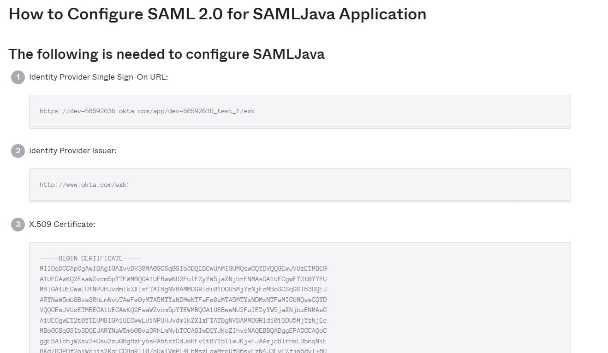

HowTo: Configuring SAML 2.0 GAM Authentication type using Okta
This document explains the steps to follow in Okta and GAM to configure authentication with Okta as IDP for GeneXus Access Manager (GAM) using SAML 2.0 Authentication type.
Okta Configuration:
- Go to the website of Okta
- Once logged in, click on the profile icon, and click on the Your apps menu option as shown in the image below:
3. Follow the steps below to create an application with SAML authentication:
4. Configuration:
Single sign-on URL: URL of the application’s local site, following this format:
- Java: https://<domain>/<base_url>/saml/gam/signin
- Net: https://<domain>/<base_url>/Saml2/Acs
Audience URL (SP Entity ID): It can contain any value, but here you must enter the same value as in the Service Provider Entity ID GAM back-end field.
The defined field names will be used in the GAM back end in the User Information tab to obtain data about the users.
The rest of the application settings in Okta can be used by default.
5. Once the application is created, go to the Sing On tab and then to the View Setup Instruction button:
You will be redirected to a site containing what you need to configure GAM.

GAM Configuration:
The GAM back end configuration for this authentication can be found here.
Distinctive aspects of this configuration:
General Tab
The highlighted fields depend on the Okta configuration:
- As seen in step 4, the value here must be the same as in the Audience URL field in Okta.
- It is the Identity Provider Issuer value from step 5.
- It must contain the value of Identity Provider Single Sign-On URL also obtained in step 5 of the Okta configuration.
Credentials Tab

It is a standard configuration, taking into account that in the last step of the Okta configuration we obtained the certificate of our application there, which will be used in the response part when generating the jks. For more information, read: HowTo: Generating certificates for authenticating using SAML 2.0 GAM Authentication.
User Information Tab
The names defined in Okta must be used for the user attributes.
See also
GAM SAML 2.0 Authentication type
HowTo: Generating certificates for authenticating using SAML 2.0 GAM Authentication
| Backlinks |
| Toc:GeneXus Access Manager (GAM) |